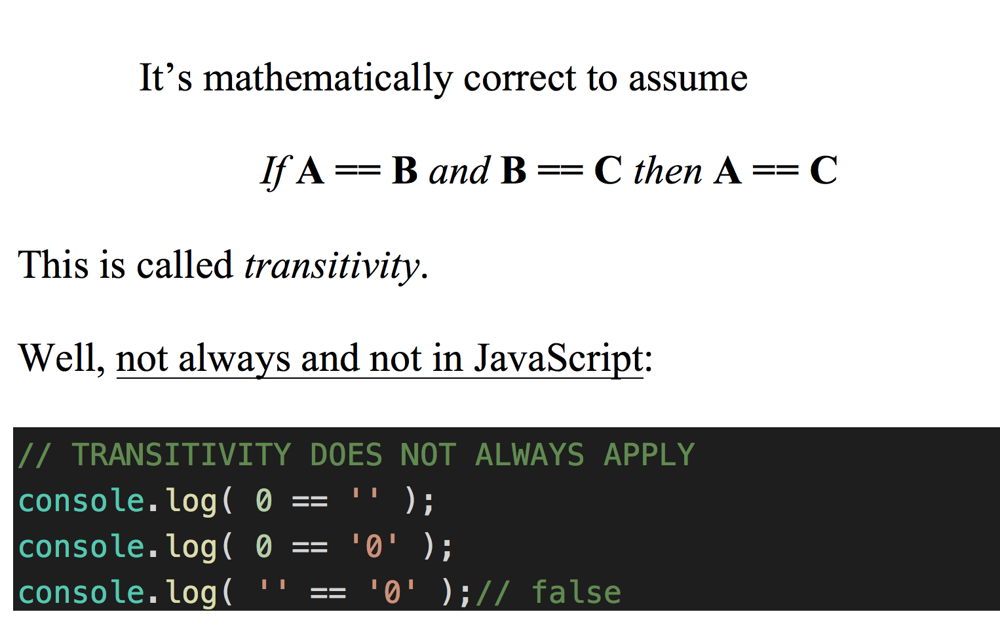

<!--
@license
Copyright (c) 2016 The Polymer Project Authors. All rights reserved.
This code may only be used under the BSD style license found at http://polymer.github.io/LICENSE.txt
The complete set of authors may be found at http://polymer.github.io/AUTHORS.txt
The complete set of contributors may be found at http://polymer.github.io/CONTRIBUTORS.txt
Code distributed by Google as part of the polymer project is also
subject to an additional IP rights grant found at http://polymer.github.io/PATENTS.txt
-->

<link rel="import" href="../bower_components/polymer/polymer-element.html">
<link rel="import" href="shared-styles.html">

<link rel="import" href="../bower_components/iron-demo-helpers/demo-pages-shared-styles.html">
<link rel="import" href="../bower_components/iron-demo-helpers/demo-snippet.html">
<link rel="import" href="../bower_components/ual-links/ual-links.html">


<dom-module id="my-view2">
  <template>

    <custom-style>
      <style is="custom-style" include="demo-pages-shared-styles">
      </style>
    </custom-style>

    <style include="shared-styles">
      :host {
        display: block;

        padding: 10px;
      }
      .do{
        margin-left: 0;
      }
      .dont{
        margin-left: 0;
      }
    </style>

    <!-- <div class="card"> -->
    <!-- <div class="circle">2</div> -->
    <h1>Onboarding</h1>


    <details>
      <summary>Get TFS access</summary>
      <p>Ask your manager to give you access to the repositories you will be working with.</p>
    </details>

    <details>
      <summary>Clone repository</summary>
      <p>Clone repository either from your favorite IDE or from command line</p>
      <p>Command line cloning:</p>
      <p>
        <code>git clone [your_repository_url] </code>
      </p>
    </details>

    <details>
      <summary>Git commonly used commands</summary>
      <!-- <p>TODO: </p> -->
      <p>
        <code>git clone</code><br>
      </p>
      <p>
        <code>git push</code><br>
      </p>
      <p>
        <code>git pull</code><br>
      </p>
      <p>
        <code>git chekcout</code><br>
      </p>
      <p>
        For example you can create your own free git repository on GitHub or clone one of the existing ones and start practicing these commands.
      </p>
      <p>
        <code> git clone https://github.com/johnpapa/ng-demos.git</code>
      </p>
      <p>
        Note that you cannot push to a private repository, unless the author granted permission to do so.
      </p>

      <!--<div class="vertical-section-container centered">-->
        <!--<demo-snippet>-->
          <!--<template>-->
            <!--<ual-links></ual-links>&lt;!&ndash;TODO: fix ual-links not showing&ndash;&gt;-->
          <!--</template>-->
        <!--</demo-snippet>-->
      <!--</div>-->

    </details>

    <details>
      <summary>Know your JavaScript</summary>
      <p>Let JavaScript easy syntax and its similar to Java or C not fool you.</p>
      <div class="dont">JavaScript is not always intuitive and common sese:</div>
      
      <p>For an in-depth coverage of <code>JavaScript</code> concepts check the
        <a href="https://github.com/getify/You-Dont-Know-JS" target="_blank">You-Dont-Know-JS</a><sup> by Kyle Simpson</sup> series.</p>
      <p>Particularly check the section <a
            href="https://github.com/getify/You-Dont-Know-JS/blob/master/scope%20&%20closures/README.md#you-dont-know-js-scope--closures" target="_blank">Scope & Closures</a>
      </p>
    </details>

    <details>
      <summary>Node and npm</summary>
      <!-- <p>TODO:</p> -->
      <p>Node is an open source JavaScript environment. Node runs on many different platforms</p>
      <ul>
        <li>Windows</li>
        <li>Mac</li>
        <li>Linux</li>
        <li>...</li>
      </ul>
      <a href="https://nodejs.org/en/" target="_blank">Download the latest <code>LTS</code> ( Long Term Support ) version</a>
      <a href="https://egghead.io/lessons/nodejs-first-api-with-node-js-express-and-mongodb" target="_blank">First API with Node.js, Express and MongoDB</a>
      <a href="https://www.youtube.com/watch?v=jo_B4LTHi3I" target="_blank">Introduction to Node.js with the creator of Node <sup>Ryan Dahl</sup></a>
    </details>

    <details>
      <summary>Web Components</summary>
      <!-- <p>TODO:</p> -->
      <p>If you are using <code>Angular 1.5+</code> check this resource for how to create components in AngularJS:</p>
      <p>
        <code>
          <a href="https://app.pluralsight.com/library/courses/building-components-angular-1-5/table-of-contents" target="_blank">Building Components with Angular 1.5 by Scott Allen</a>
        </code>
      </p>
      <p><code>Angular 2/4</code> is component based out of the box.</p>
      <p><code>Polymer</code> is a great library for creating reusable Web Components and more.</p>
    </details>
    <!-- </div> -->
        
    <ual-links></ual-links>
    
  </template>

  <script>
      class MyView2 extends Polymer.Element {
          static get is() { return 'my-view2'; }
      }

      window.customElements.define(MyView2.is, MyView2);
  </script>
</dom-module>
